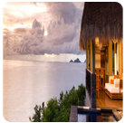
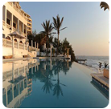
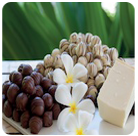

준비과정

- 더 많은 질문
-
다른 질문사항을 꼭 확인하시길 바랍니다.
- 필요한 준비물은 뭔가요?
-
잦은 야외 활동으로 인한 피부 보호를 위해 자외선 차단제와 선글라스를 준비해 오시길 바랍니다. 스파, 해양 스포츠, 낚시 등 다양한 볼거리들이 준비되어 있으니 취향에 따라서 여벌의 옷을 준비해 오시면 됩니다.
- 어떻게 가야 합니까?
-
Air Seychelles를 이용하십시오. 남아 프리카 공화국에서 논스톱 정기 항공편을 운항하고 있습니다.카타르 항공, Etihad 항공과 에미레이트는 두바이, 아부 다비 및 도하 그들의 허브를 통해 다양한 목적지로 항공편을 제공합니다.
- 원하시는 질문이 이 곳에 없습니까?
-
추가적인 용건이 있으시면 아래 이메일로 연락 바랍니다.
jalza87@naver.com
ssongki@gmail.com
여행지 에서
- 예방 접종이 필요합니까?
-
황열병 등의 예방 접종은 필요하지 않습니다.
감염 지역은 북부와 중부 남미 및 중앙 아프리카의 특정 부분입니다. - 관광지 내부에 대한 정보는 어디서 얻나요?
-
호텔의 안내 플렌을 참조하십시오. 또는 산책소와 관광 명소의 사이트의 절을 참조하십시오.
- 해선 안 될 행동이 있나요?
-
문화 유적지나 레스토랑에서는 샌들, 노출이 과한 옷들을 금지하고 있습니다. 이 점 양해 바랍니다.
예약
- 어떻게 숙박 시설을 예약할 수 있습니까?
-
홈페이지를 통해 숙박 시설을 예약할 수 있습니다.
1) 여행사, 관광사를 통해.
2) 직접 호텔에 예약
3) 웹사이트 Seychelles에 지정된 숙박 시설에 관한 내용. 숙소 섹션. - 어디에서 여행자 수표 또는 돈을 바꿀 수 있나요?
-
Seychelles의 화페로 외화를 교환하시려면 은행, Seychelles 국제 공항 또는 호텔에서 교환하실 수 있습니다.
- 높고 낮은 계절 사이에 가격 차이가 있을까요?
-
Seychelles은 기후차가 크지 않습니다. Seychelles에서는 일년 내내 관광 시즌을 즐길 수 있습니다. 그러나 7~8 월까지 유럽의 여름 휴가 시즌으로 인해 다소 복잡하실 수 있습니다. 그러나 호텔과 레스토랑, 다이브 센터의 요금이 기간의 영향을받지 않습니다.
음식
-
마리 앙투아네트
(Marie Antoinette) -
19세기부터 내려온, 마헤에서 최고로 많은 상을 탄 레스토랑이다. 밥과 토마토, 초록 양파와 함께 서빙되는 ‘마늘과 버터에 구워 칠리 소스를 곁들인 참치 스테이크’가 유명하다.
- 알 마레 (Al Mare)
-
뷰 발론 해변에서 만날 수 있는 이탤리언 레스토랑. 이탈리아 음식뿐만 아니라 코코넛 우유에 요리한 싱싱한 문어 같은 전통 음식도 맛볼 수 있다. 북쪽 섬을 바라볼 수 있는 테이블을 예약하면 더욱 맛있게 먹을 수 있을 것이다.
- 봉봉 플루메 (Bonbon Plume)
-
프라스린의 안세 라찌오 해변에 친환경 자재로 지어진 레스토랑. 마늘과 버터로 양념한 왕새우 소금구이와 그릴로 구운 바닷가재, 바나나 스튜와 달콤한 소스를 곁들인 와플이 일품이다.